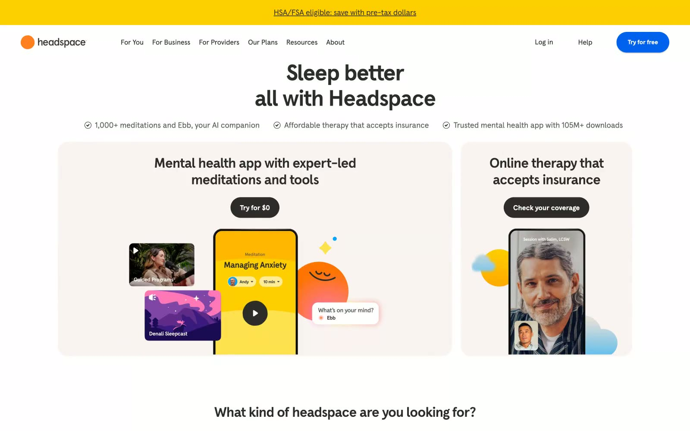

Headspace 的 Design.md 主题展示，围绕医疗健康、健康生活、浅色界面、AI组织页面。
Explore Headspace's light Other design system: Sky Connect #0061ef, Sunshine Burst #ffce00 colors, Headspace Apercu typography, and DESIGN.md for AI agents.

#0061ef: #0061ef#ffce00: #ffce00#3b197f: #3b197f#00a4ff: #00a4ff#ffa1cc: #ffa1cc#4b4c4d: #4b4c4d#000000: #000000#2d2c2b: #2d2c2b#f9f4f2: #f9f4f2#44423f: #44423f#ffffff: #ffffff#e2ded9: #e2ded9fontFamily: [object Object]fontSize: [object Object]lineHeight: [object Object]letterSpacing: [object Object]control: 12pxcard: 16pxpreview: 16pxmobileGutter: 16pxouterGutter: 24pxcardInset: 24pxsection: 56px